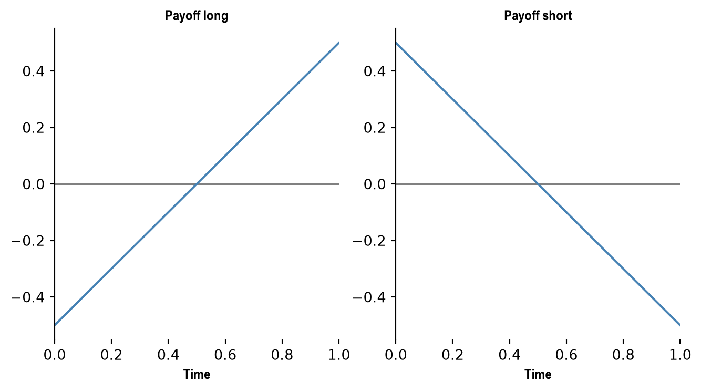

Code
import numpy as np
import pandas as pd
import matplotlib.pyplot as plt
from tabulate import tabulateSummary of Selected Chapters
import numpy as np
import pandas as pd
import matplotlib.pyplot as plt
from tabulate import tabulateThis is a non-exhaustive summary of selected chapters from Hull (2015).
Derivative. A derivatvive can be defined as a financial instrument whose value depends on (or derives from) the values of other, more basic, underlying variables. Very often the variables uderlying derivatives are the prices of traded assets.
A derivatives exchange. A derivatives exchange is a market where individuals trade standardized contracts that have been defined by the exchange. The first market of the kind was established in Chicago in the late 19th century. Once two traders haev agreed on a trade, the transaction is handled by the exchange clearing house. It stands between the two parties and manages the risks. The old open outcry system has been replaced by electronic markets.
Not all derivatives trading is on exchanges. Many trades take place in OTC markets. Banks, other large financial institutions, fund managers, and corporations are the main participants OTC derivatives markets. Once the two parties have agreed to the trade, they can either proceed bilateraly, or through a central counterparty (CCP). The Great Financial Crisis (2008) greatly impacted OTC markets, which faced increased scrutiny. Three important changes are:
Standardized OTC derivatives in the United States must, whenever possible, be traded on what are referred to a swap execution facilities (SEFs). These are platforms where market participants can post bid and offer quotes and where market participants can choose to trade by accepting the quotes of other market participants.
There is a requirement in most parts of the world that a CCP be used for most standardized derivatives transactions.
All trades must be reported to a central registry.
Both the over-the-counter and the exchange-traded market for derivatives are huge. The number of derivatives transactions per year in OTC markets is smaller than in exchange traded markets, but the average size of the transactions is much greater.
Forward contract. A forward contract is an agreement to buy or sell an asset at a certain future time for a certain price. It can be contrasted with a spot contracts which is an agreement to buy or sell immediately. A forward is typically traded in OTC markets. One party assumes a long position (i.e. agree to buy the asset at a defined time and price) and the counterparty assumes a short position (i.e. agree to sell for the agreed price at the agreed time). This type of contract can be useful to hedge against FX risk. For instance, a financial institution (FI) expects to disburse £1m in 6 months, so to protect themselves against FX risks, they purchase a forward (quote is number of USD per GDP).
forwards = {
"spot": {
"bid": 1.5541,
"offer": 1.5545
},
"1m": {
"bid": 1.5538,
"offer": 1.5543
},
"3m":
{
"bid": 1.5533,
"offer": 1.5538
},
"6m":
{
"bid": 1.5526,
"offer": 1.5532
}
}
df = pd.DataFrame(forwards)
print(tabulate(df.head(), headers=df.columns)) spot 1m 3m 6m
----- ------ ------ ------ ------
bid 1.5541 1.5538 1.5533 1.5526
offer 1.5545 1.5543 1.5538 1.5532Let us consider the forward contract of the previous section. If the spot price of GBP to USD raises to 1.6 in 6 months, then, the FI which was long on the pound, will see the value of its contract raise to:
\[ \$ (1.6 - 1.5532) \cdot 10^6 = \$ 46{,}800 \]
In general, the payoff from a long position in a forward contract on one unit of an asset is:
\[ S_T - K \]
where \(K\) is the delivery price, \(S_T\) is the spot price of the asset at maturity \(T\) of the contract. This is because the holder of the contract is obligated to buy an asset worth \(S_T\) for \(K\). The payoff from a short position is given by:
\[ K - S_T \]
fig, axes = plt.subplots(1, 2, figsize=(8, 4))
x = np.linspace(0, 1, 20)
titles = ["Payoff long", "Payoff short"]
for i, ax in enumerate(axes):
ax.set_xlim(0, 1)
ax.set_xlabel("Time", fontfamily="Arial Narrow", fontsize=10, weight="bold")
ax.spines["top"].set_visible(False)
ax.spines["bottom"].set_visible(False)
ax.spines["right"].set_visible(False)
ax.axhline(y=0, color="grey", linewidth=1.2)
ax.set_title(titles[i], fontfamily="Arial Narrow", fontsize=10, weight="bold")
axes[0].plot(
x,
-0.5 + 1 * x,
color="steelblue"
)
axes[1].plot(
x,
0.5 - 1 * x,
color="steelblue"
)
Let us suppose that the spot price \(S_0\) of a stock is \(S_0 = 60\). We further assume that the interest rate is \(r = 5\%\). What should be the 1-year price of a forward contract whose underlying is the stock?
It needs to be \(S_0 \cdot r = 63\) because we have \(E[S_T] = S_0\), at time \(t=0\). For instance, if the price was \(\$64\), we could borrow \(\60\) at \(r\) for one year, purchase the stock in year \(T\), and sell it at \(\$64\) thus making a one dollar profit. If the forward is underpriced, the investor borrows the amount at \(r\) necessary to purchase it and then makes a profit when buying the stock at time \(T\).
Like a forward contract, a futures contract is an agreement between two parties to buy or sell an asset at a certain time in the future for a certain price. Unlike forward contracts, futures contracts are normally traded on an exchange.
The largest exchanges on which futures contracts are traded are the Chicago Board of Trade (CBOT) and the Chicago Mercantile Exchange (CME), which have now merged to form the CME Group.
On these and other exchanges throughout the world, a very wide range of commodities and financial assets form the underlying assets in the various contracts. The commodities include pork bellies, live cattle, sugar, wool, lumber, copper, aluminum, gold, and tin. The financial assets include stock indices, currencies, and Treasury bonds.
Options are traded both on exchanges and in the over-the-counter market. There are two types of option. A call option gives the holder the right to buy the underlying asset by a certain date for a certain price. A put option gives the holder the right to sell the underlying asset by a certain date for a certain price. The price in the contract is known as the exercise price or strike price; the date in the contract is known as the expiration date or maturity.
American options can be exercised at any time up to the expiration date. European options can be exercised only on the expiration date itself.
It should be emphasized that an option gives the holder the right to do something. The holder does not have to exercise this right. This is what distinguishes options from forwards and futures, where the holder is obligated to buy or sell the underlying asset. Whereas it costs nothing to enter into a forward or futures contract, there is a cost to acquiring an option.
In the exchange-traded equity option market, one contract is usually an agreement to buy or sell 100 shares.
At this stage we note that there are four types of participants in options markets:
Typically, buyers are referred to as having long position, sellers are referred to as having short positions. Selling an option is also referred to as writing the option.
Three broad categories of traders can be identified: hedgers, speculators, and arbitrageurs. Hedgers use derivatives to reduce the risk that they face from potential future movements in a market variable. Speculators use them to bet on the future direction of a market variable. Arbitrageurs take offsetting positions in two or more instruments to lock in a profit.
In this section we illustrate how hedgers can reduce their risks with forward contracts and options.
See previous example in Section 2.3. This example illustrates a key aspect of hedging. The purpose of hedging is to reduce risk. There is no guarantee that the outcome with hedging will be better than the outcome without hedging.